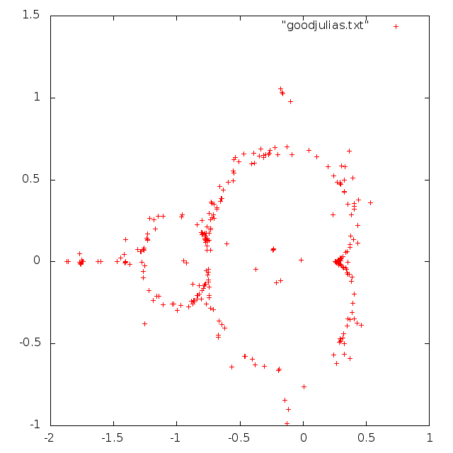

Julia set viewer
I admit that I’m writing this in 2017, though I meant to write about it 2014!
I made a Julia set viewer that can run in the web browser, rendering it in realtime using the GPU.
The mouse controls c in the iteration z\mapsto z^2+c, where the initial z is the particular point of the complex plane corresponding to the pixel.
The coloring doesn’t mean anything; it is just from an earlier GPU experiment. The controls:
- Shift-a or middle click
- Go on a guided tour of interesting points.
- Esc
- Regain control.
- Space
- Sets a point r that is fixed while held, and then c is r+(m-r)\zeta, where \zeta is the zoom controlled by the mousewheel and m is the mouse.
- Doubleclick
- Pauses or unpauses. When pausing, copies the current point to the URL.
- Space-click
- Adds point to animation path.
- Right click
- Begins animation.
- 0
- Toggles rendering mode between black background and white background.
- P
- Toggles showing the current point c.
- Enter
- Cycles modes (1, 2, or 3).
- 1
- Switches to mode 1. View Julia set.
- 2
- Switches to mode 2. View corresponding point in Mandelbrot set. The \zeta for Space is the zoom for this view.
- 3
- Switches to mode 3. Distorts between modes 1 and 2.
- s
- Replaces current point c with c^2+c.
- v and w
- Replaces current point with one of two inverses of c^2+c.
The idea after getting the program to show Julia sets at all was to make it drift through different parameters automatically. At first, I thought I thought a complicated-enough path would be sufficient, but most Julia sets are not that interesting!
I got a bunch of people to play with it and choose their favorite points (Shift-click would send the point to the server), and then the implementation of Shift-A is to plot a path through these points.
My hunch was that the interesting points would have something to do with the boundary of the Mandelbrot set, and indeed:

The Mandelbrot set records the connectivity of all the Julia sets. The boundary of the Mandelbrot set is where the connectivity is uncertain, which gives interesting fractal fringes. Though, it looks like there are some other interesting configurations in the centers of the Mandelbrot bulbs, where the corresponding Julia set has a pleasing symmetry.